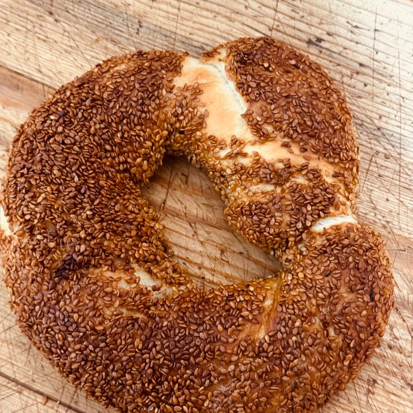
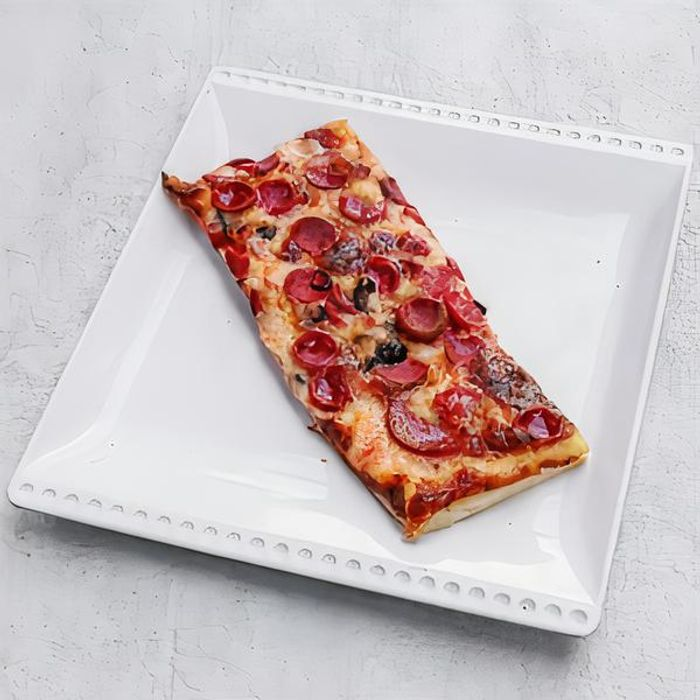
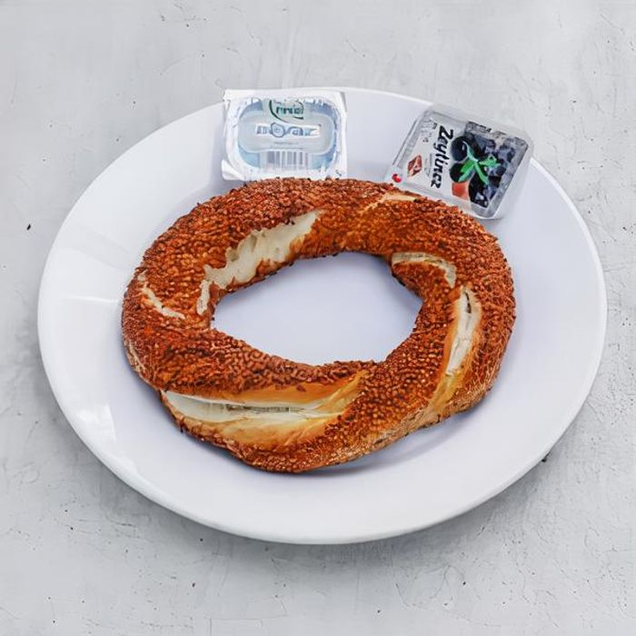

HER GÜNE BİR SİMİT YAKIŞIR
Günün en güzel
başlangıcı.
Simit arası lezzetler, kahvaltılık favoriler ve günün tatlı molaları. Kadıköy Simit menüsünü keşfedin.
Lezzetleri keşfet
Tahinli Simit95 TL ↗KADIKÖY SİMİT'TEN
En sevilen lezzetler
 Çok sevilen
Çok sevilenKahvaltılıklar
Kaşarlı Açma
95 TL

Çok sevilenKahvaltılıklar
İtalyan Dilim Pizza
195 TL

Çok sevilenKahvaltılıklar
Peynirli Zeytin Ezmeli Sürme Simit
150 TL
Çok sevilen
Kahvaltılıklar
Tahinli Simit
95 TL
 Çok sevilen
Çok sevilenSimit Arası Ürünler
Kaşarlı Simit Tost
150 TL
 Çok sevilen
Çok sevilenVitamin Bar
Taze Sıkma Portakal Suyu
200 TL
KADIKÖY'DE BİR MOLA
Bir simit.
Bir güzel mola.
Simitin yanına bir içecek, güne küçük bir lezzet molası. Bizi Kadıköy'de ziyaret edebilirsiniz.
Adres ve yol tarifi ↗